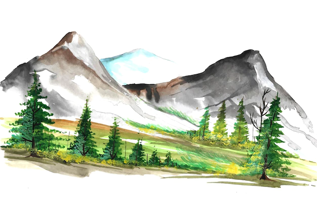

Our trekking and hiking excursions take you to some of the most remote and beautiful regions on earth, with many of our treks starting where other treks end. You can choose from a variety of basic treks to tough treks meant to bring you closer to the culture and wilderness of a country, as well as some of the most off-the-beaten-track trekking experiences in the entire world. Your participation in one of our trekking programs means that you are supporting the local community in growing and developing both economically and environmentally, whether it is by using semi-permanent campsites to discourage logging in the Himalayas or through hiring local guides, porters, and cooks.

Welcome
to
Hikker's Heaven
